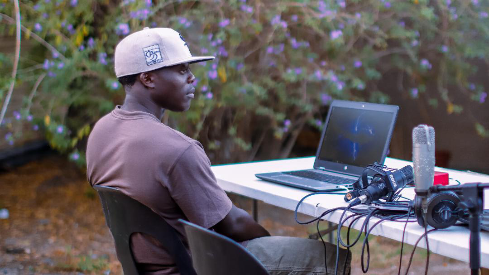
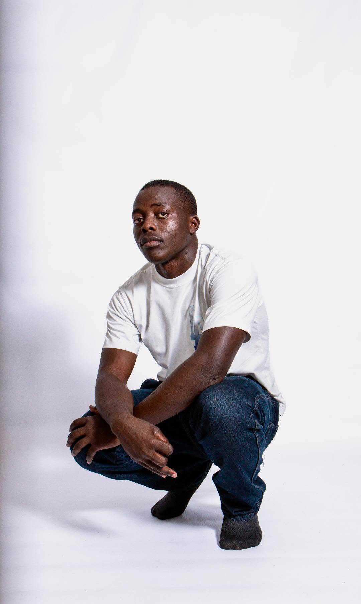
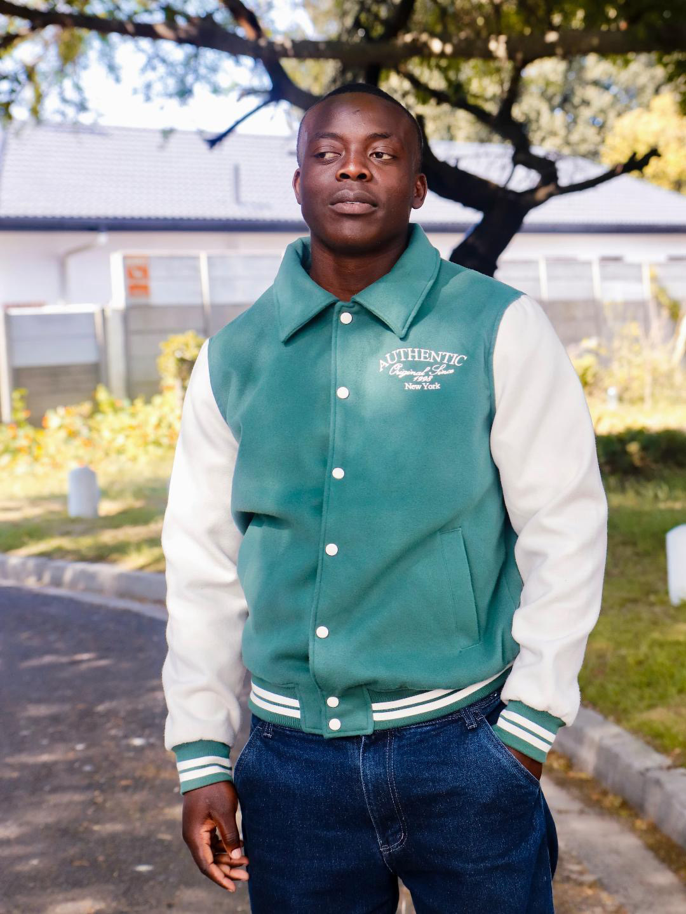
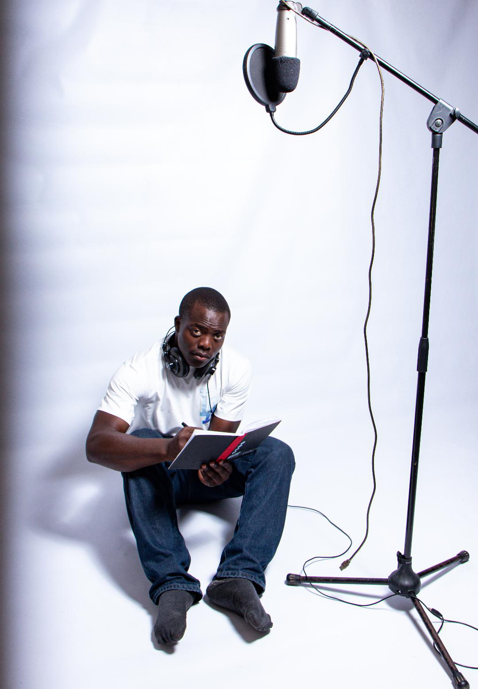
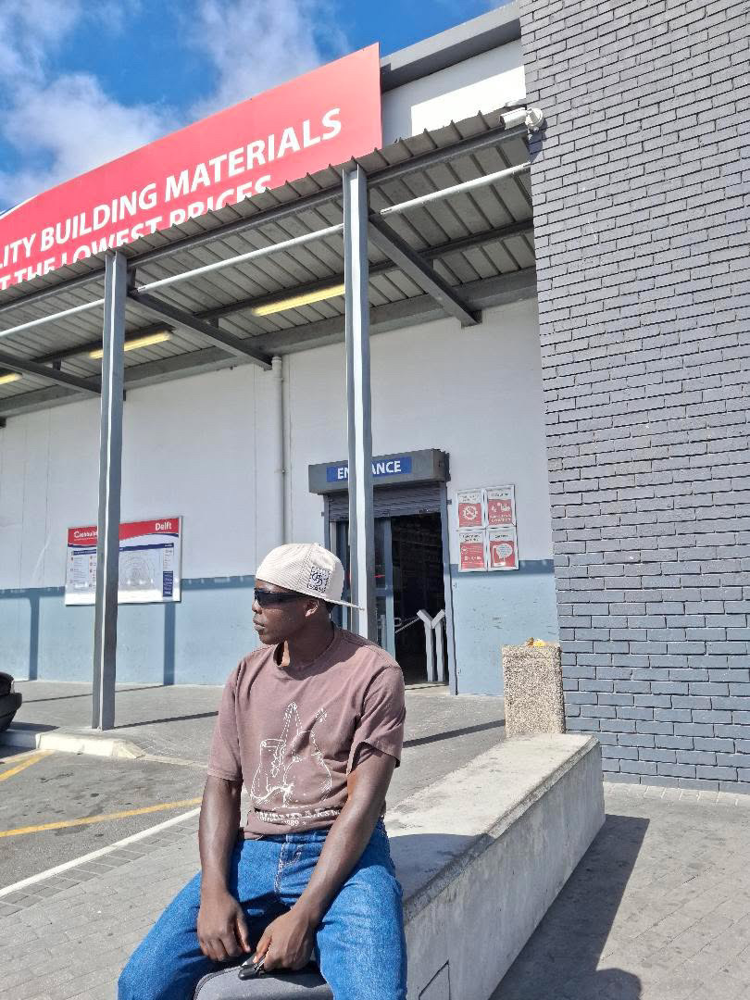

Rapper / Artist
DESTINY ViLN ChLd
Raw perspective, strong presence, and music built from real pressure, faith, hunger, and lived experience.
A sound and image that feels grounded, sharp, and ready for the right collaborations.

Built for listeners, artists, and producers who move with intention.
About
An artist with weight behind the image.
Destiny carries a grounded kind of presence — thoughtful, direct, and unforced. The music leans into real life instead of chasing noise, which gives the whole identity more staying power.
Under the alter ego ViLN ChLd, the world feels reflective but still dangerous in the right way. It’s personal, self-aware, and open enough to invite creative chemistry with the right people.
Serious tone. Real message. Strong collab energy.
Visuals
A cleaner world around the music.



Tap In
Step into the world and stay close to the drops.
YouTube
@destinyx00
Music content, visuals, artist presence, and a deeper look into the sound.
↗ Instagram@destinymusic__
Reels, updates, artist moments, and the energy behind the page.
↗
Facebook
Real Destiny
A wider space for the brand, community, and more of the journey.